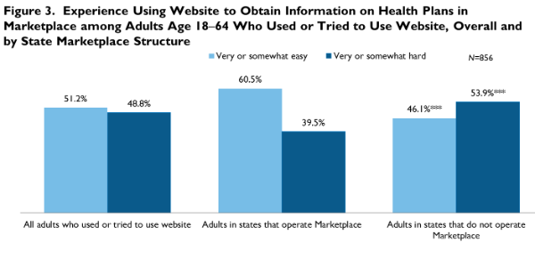

|  |
|
||||||||||||||||||||||||||||||||||||||||||||||||||||||||||||||||||||||||||||||||||||||||||
Who Has Been Looking for Information in the ACA Marketplaces? Why? And How?
Fredric Blavin, Stephen Zuckerman, and Michael KarpmanMarch 5, 2014
As of February 25, 2014, approximately 4 million people have enrolled in a health plan through the health insurance Marketplaces established by the Affordable Care Act (ACA) and approximately 1.85 million people have enrolled since January 1st alone—more than an 80 percent increase over enrollment during the Marketplaces’ first three months (US Department of Health and Human Services 2014).1 While the low October–December 2013 enrollment likely reflects a lack of awareness of the ACA (Long and Goin 2014) combined with early technical problems with the federal eligibility and enrollment system (i.e., HealthCare.gov) and the state-based Marketplaces, the most recent estimates provide some optimism on the viability of the Marketplaces.2
This brief complements Marketplace enrollment data by providing information about who looked or was planning to look for health coverage in the Marketplaces during the first two to three months of the rollout, as well as why and how they looked for information. For example, were populations targeted by the ACA more likely to look for information in the Marketplaces than those whose incomes were too high to be eligible for Medicaid or Marketplace subsidies? Were individuals who looked for information merely window-shopping, or were they actively seeking to either buy health insurance or determine their eligibility for Medicaid or Marketplace subsidies? Were the individuals who looked for information relying on a website or some other information source, such as call centers, navigators, or insurance agents and brokers?
What We Did
This brief draws on data collected in December 2013 from the Health Reform Monitoring Survey (HRMS), the third month following the rollout of the Marketplaces. The survey asked a sample of nonelderly adults (age 18–64) how much, if anything, they had heard about the Marketplaces. The more than four out of five who had heard about the Marketplaces were asked if they had looked for health plan information in the Marketplaces. Respondents who had done so were then asked (1) why,3 (2) which sources of information they used or tried to use, and (3) how easy or difficult it was to obtain Marketplace information using those sources. Respondents who reported that they planned to look for information in the Marketplaces were asked a similar set of questions (except for ease of use).4
We analyze nonelderly adult responses overall and by age, insurance type,5 and income.6 We also compare the level of ease or difficulty using the website among adults in states operating their own Marketplaces with the ease or difficulty of use among those in states relying on the federal Marketplace.7
What We Found
Over one-quarter of nonelderly adults had either looked for information or planned to look for information on health insurance plans in the Marketplaces as of December 2013. More than one-third of those reporting an interest in looking for information in the Marketplace had already done so. Slightly more than one in ten (11.8 percent) had looked in the Marketplace, 17.0 percent planned on looking, 54.0 percent had not looked and did not plan on looking, and 17.1 percent had not heard about the Marketplaces (figure 1).
Adults targeted by and expected to benefit from the ACA reforms—particularly lower-income individuals, adults with nongroup coverage, and the uninsured—were more likely to have looked for or planned on looking for information in the Marketplaces than their respective reference groups (figure 1). Almost one-fifth of adults without health insurance (18.8 percent) and 28.1 percent of those with nongroup coverage actually looked in the Marketplaces between October and December 2013, compared with only 8.8 and 9.0 percent of adults with employer-sponsored insurance (ESI) and public coverage, respectively. An additional 33.2 percent of uninsured adults, 20.4 percent with nongroup, and 17.3 percent with public coverage planned on looking in the Marketplace, compared with 11.7 percent of adults with ESI. Overall, roughly half of respondents without health insurance (52.0 percent) and almost half with nongroup coverage (48.5 percent) had looked or planned to look for information in the Marketplace.
Similarly, 38.2 percent of adults in lower-income families had looked (13.2 percent) or planned on looking (25.0 percent) for information on health plans in the Marketplace, compared with 30.8 percent of those in middle-income and 19.3 percent of those in higher-income families. Notably, younger adults (age 18–34) (19.6 percent) were more likely to plan on looking in the Marketplaces than those age 50–64 (13.8 percent)—an encouraging sign that age-related adverse selection in the Marketplaces may well decrease over time.
While these ACA target subgroups were more likely to have looked for or have planned to look for information in the Marketplaces than their respective reference groups, they were also more likely not to have heard at all about the Marketplaces. For example, 23.4 percent of uninsured respondents, 27.0 percent of adults in low-income families, and 22.6 percent of those age 18–34 had not heard about the Marketplaces—significantly higher than the full population average (17.1 percent) and the averages for the respective reference groups.
Around 6 out of 10 adults who had already looked for information in the Marketplaces were actively seeking to purchase health insurance or determine whether they were eligible for subsidized coverage; the remaining adults who had looked in the Marketplaces were window-shopping (i.e., exploring the website, comparing health plan options, or looking in the Marketplaces for other reasons [table 1]). Around two-thirds of the window-shoppers wanted either to compare their current health plan to Marketplace plans or to know more about options in case of a life event (retirement, loss of current insurance, or start of new business); the rest were just curious to know how their Marketplace works or were looking for other reasons (data not shown).
Of those who said they were planning on looking for information in the Marketplaces, almost half (48.0 percent) said they would be actively seeking either to purchase insurance or to determine if they were eligible for subsidized coverage. Most of the remainder were likely window-shoppers (45.3 percent of the total), with only a few (6.7 percent of the total) saying they had tried to look earlier but found the website was not working (data not shown).8
The vast majority of uninsured (86.2 percent) and lower-income respondents (76.0 percent) who looked for information in the Marketplaces were seeking to purchase health insurance or determine if they were eligible for subsidized coverage or Medicaid (table 1). In contrast, only 39.7 percent with ESI and 33.5 percent with incomes at or above 400 percent of FPL were actively seeking to purchase coverage or determine if they were eligible for Medicaid or Marketplace subsidies. Adults age 18–34 were nine percentage points more likely to be looking for information for these reasons than their counterparts age 50–64 (64.2 percent versus 55.2 percent).
Across all subgroups, those who planned on looking for information in the Marketplaces were less likely to want to purchase coverage or see if they were eligible for subsidies or Medicaid compared with those who had already looked in the Marketplaces. However, consistent with those who had already looked for information, uninsured and low-income adults who planned on looking in the Marketplaces were also more likely to want to purchase coverage or see if they were eligible for Marketplace subsidies or Medicaid than the other coverage subgroups.
The vast majority of people who looked for information in the Marketplaces either used or tried to use a website (figure 2). Among respondents who looked, 85.1 percent had used or tried to use a website; 16.2 percent had used or tried to use a call center; 7.4 percent had used or tried to use assistance from navigators, application assisters, certified application counselors, or community health workers; 12.1 percent had used or tried to use assistance from an insurance agent or broker, and 10.6 percent had used or tried to use other sources (e.g., assistance from family and friends, radio, TV, or newspapers). We also find that one-quarter of those that had used or tried to use a website had also used or tried to use at least one additional source to obtain information.
Lower-income adults and adults ages 50–64 were less likely to obtain information through a website than their higher income and younger counterparts. Despite these differences, however, at least 78 percent of each of these subgroups used the website to obtain information in the Marketplaces (data not shown).
Most adults found the website very or somewhat easy to use, with the level of ease higher among those in states that operate their own Marketplaces. Despite well-documented complaints and technical glitches with Marketplace websites during the survey period, slightly over half (51.2 percent) of those who used a website to obtain information on health insurance plans found it very or somewhat easy to use (figure 3). Interestingly, adults in states that operated their own Marketplaces were more likely to find the website very or somewhat easy to use (60.5 percent) than those in states that did not operate their Marketplaces and relied on the federal Healthcare.gov (46.1 percent).
What It Means
Who?
Although a large majority of people had not heard about the health insurance Marketplaces or did not plan on using them to look for coverage, those in the ACA’s target population—adults who were uninsured, had pre-reform nongroup coverage, or had low incomes—were disproportionately more likely to have looked or planned to look for information in the Marketplaces. Given that more adults were planning to use the Marketplaces as of December 2013 than had already used them, it is not surprising that enrollment increased at a faster rate in January and February 2014 than it had in the three previous months. While this trend could continue, future Marketplace enrollment could be limited by the fact that those who are planning to look in the Marketplace are less committed to purchasing insurance or determining if they are eligible for subsidized coverage than those who have already looked. Younger adults were more likely to plan on looking in the Marketplaces than older adults, implying that the average health status of enrollees in Marketplace plans could improve over the upcoming months.
Why?
It is also clear that those most likely to benefit from ACA coverage reforms are not simply window-shopping in the Marketplaces but are actively seeking to enroll in Medicaid or private health plans. Almost 90 percent of uninsured adults who had used the Marketplaces did so to purchase coverage or determine their eligibility for Medicaid or Marketplace subsidies. Of the uninsured who were planning to look in the Marketplaces, over 70 percent were also seeking coverage. Large majorities of low-income Marketplace users were also seeking coverage.
How?
The clear reason the website problems in the early rollout period were so important is that the vast majority (85 percent) of adults who looked for information on health insurance plans in the Marketplaces used a website. But despite the widely acknowledged website flaws, only about half of the respondents who used a website found it very or somewhat hard to use. Two more findings may be important for ACA enrollment efforts going forward: (1) websites in states with a state-based Marketplace were found to be easier to use than websites in states that relied on HealthCare.gov and (2) call centers or navigators had been used by more than one in five adults who looked for information in the Marketplace, which could be important for potentially underserved groups.
References
US Department of Health and Human Services. 2014. “Health Insurance Marketplace: February Enrollment Report.” ASPE Issue Brief. Washington, DC: US Department of Health and Human Services, Office of the Assistant Secretary for Planning and Evaluation.
Courtot, Brigette, Terri Coughlin, and Divvy Upadhyay. 2014. “Building ACA-Compliant Eligibility and Enrollment Systems in Selected States.” Washington, DC: Urban Institute.
Long, Sharon, and Dana Goin. 2014. “Most Adults Are Not Aware of Health Reform's Coverage Provisions.” Washington, DC: Urban Institute.
About the Series
This brief is part of a series drawing on the Health Reform Monitoring Survey (HRMS), a quarterly survey of the nonelderly population that is exploring the value of cutting-edge Internet-based survey methods to monitor the Affordable Care Act (ACA) before data from federal government surveys are available. The briefs provide information on health insurance coverage, access to and use of health care, health care affordability, and self-reported health status, as well as timely data on important implementation issues under the ACA. Funding for the core HRMS is provided by the Robert Wood Johnson Foundation, the Ford Foundation, and the Urban Institute.
For more information on the HRMS and for other briefs in this series, visit www.urban.org/hrms.
About the Authors
Fredric Blavin is a senior research associate, Stephen Zuckerman is codirector and senior fellow, and Michael Karpman is a research associate in the Urban Institute's Health Policy Center. The authors gratefully acknowledge the suggestions and assistance of Bowen Garrett and Katherine Hempstead.
Notes
1 Goldstein, Amy. “Health Insurance Enrollment on Target in January.” Washington Post, February 12, 2014; Tavenner, Marilyn. “Another Significant Milestone: Marketplace Enrollment Hits 4 Million.” US Department of Health and Human Services HealthCare blog, February 25, 2014. http://www.hhs.gov/healthcare/facts/blog/2014/02/marketplace-enrollment-hits-4-million.html. 2 See Courtot et al. (2014) for examples of technical problems faced by HealthCare.gov and some state-based Marketplaces. The following 15 states operated their own Marketplaces at the time of this analysis: CA, CO, CT, DC, HI, KY, MD, MA, MN, NV, NY, OR, RI, VT, and WA. ID and NM also have state-based Marketplaces, but were relying on the federal Marketplace website at the time of the survey. 3 This question has eight response categories, including a fill-in text box option. We created the following hierarchy of responses because individuals can check more than one reason: (1) I wanted to purchase health insurance or find out if I am eligible for subsidies to lower the cost of insurance or eligible for Medicaid, and (2) I wanted to explore and compare health plan options or looked for other reasons (which include wanting to compare current health plan to Marketplace plans, know more about health insurance options for retirement, know more about health insurance options in case current insurance is lost, know more about health insurance options in case respondent starts own business, and curious about how the marketplaces work). 4 Respondents who planned on looking for information were given an additional response category (“Tried to look earlier but website was not working”) in the reasons question. 5 We exclude individuals who reported private health insurance but could not specify the type of coverage from the coverage subgroup analysis. 6 We create three categories of family income: Lower-income—those with incomes at or below 138 percent of FPL, which is the income cutoff for Medicaid eligibility in states opting for the ACA’s Medicaid expansion; middle-income—those with incomes between 138 and 399 percent of FPL, which is the income cutoff for eligibility for Marketplace subsidies; and higher-income—those with incomes at or above 400 percent of FPL. 7 We are unable to analyze the level of ease or difficulty using sources of information beside the website because of sample size restrictions. 8 The latter group may include some who are interested in purchasing coverage or determining eligibility for subsidized coverage, as well as “window shoppers.”
|
|||||||||||||||||||||||||||||||||||||||||||||||||||||||||||||||||||||||||||||||||||||||||||


 |
 |
 |